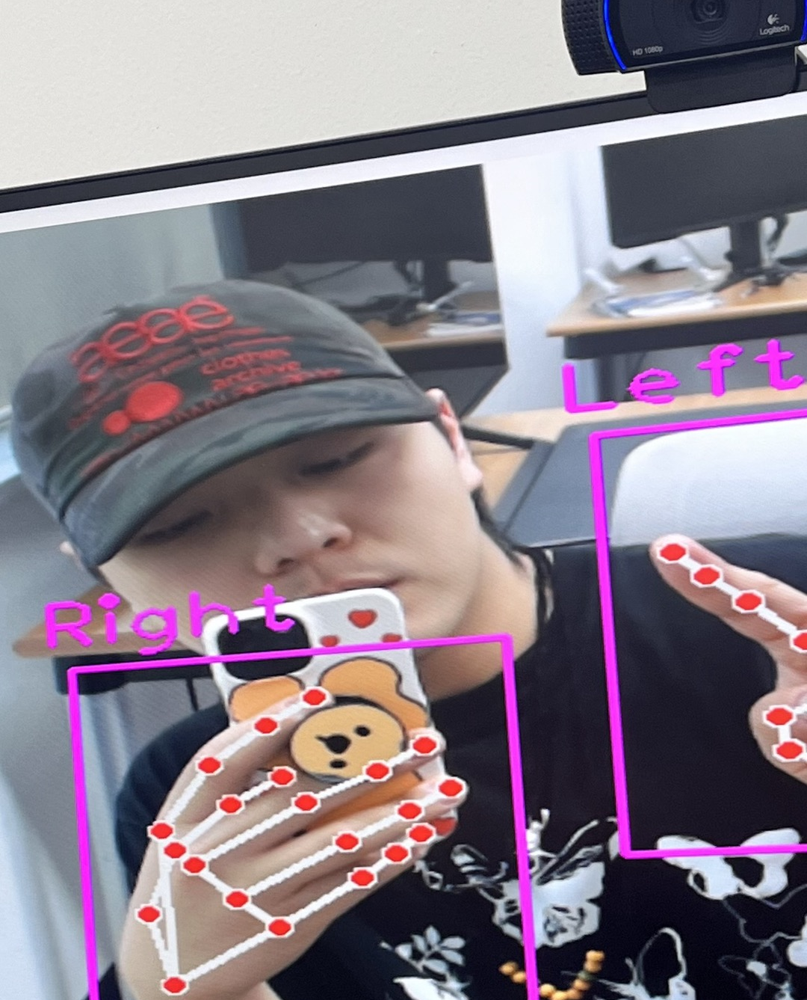

People
Youngwon Kim 김영원
Assistant Professor, Director
Department of Computer Software Engineering
Kumoh National Institute of Technology
kim01@kumoh.ac.kr
M.S. Students
Jemin Lee 이제민
Since 2025-2
VR, Games, Convergence Contents
char3941@kumoh.ac.kr
Jeonghyeon Kim 김정현
Since 2025-2
Collaboration, Multimodal Interaction
dnrgusrla1@kumoh.ac.kr
Undergraduate Students
Hyeongjun Kang 강형준
Since 2024-2
Immersive Technologies, XR Contents
joh0816@gmail.com
Donghee Lee 이동희
Since 2026-1
VR, HCI, Games
furyburst@naver.com
Research Intern
Yoongi Nam 남윤기
Since 2025-2 (Dasso)
nyk510@kumoh.ac.kr
Academic Break

Kikong Lee 이기공
Since 2024-1
Metaverse Contents, XR Games
dlrlrhd@gmail.com
Alumni

Taewan Kim 김태완
2025-1 to 2026-1, B.S.
Now at KETI
kimtaeyan21@naver.com

Junseok Im 임준석
2024-2 to 2026-1, B.S.
ij8337@naver.com

Gu Kim 김구
2024-2 to 2026-1, B.S.
hadove02@naver.com
Jemin Lee 이제민
B.S. 2025.08
Now M.S. student at KIT
char3941@kumoh.ac.kr
Jeonghyeon Kim 김정현
B.S. 2025.08
Now M.S. student at KIT
dnrgusrla1@kumoh.ac.kr